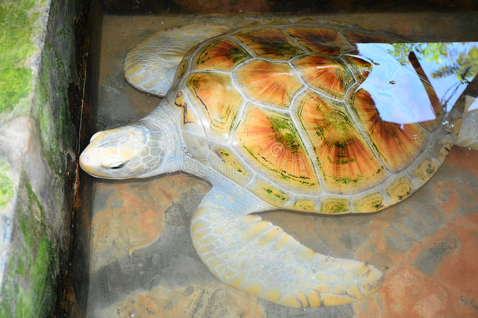
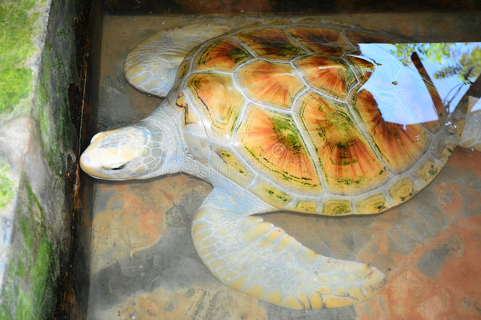

Welcome to Kosgoda
Introduction
The Kosgoda Turtle Hatchery is a renowned conservation project in Sri Lanka's coastal village of Kosgoda. Its primary objective is to protect endangered sea turtles by monitoring and relocating their nests. The hatchery offers visitors the chance to witness baby turtles hatching and being released into the ocean, contributing to their survival. The hatchery also educates the public about sea turtle conservation, conducting awareness programs and highlighting the importance of protecting these creatures and their habitats. Additionally, the hatchery serves as a rehabilitation center for injured turtles, aiming to release them back into the wild. Visiting the hatchery provides a unique and educational experience, allowing visitors to support conservation efforts and contribute to safeguarding these majestic creatures and marine ecosystems
Directions


 
